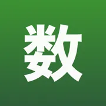
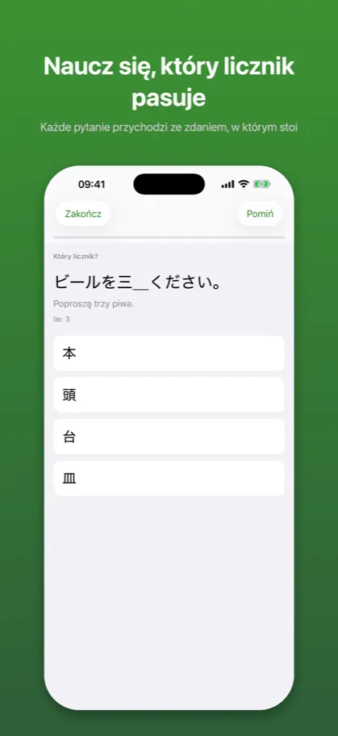
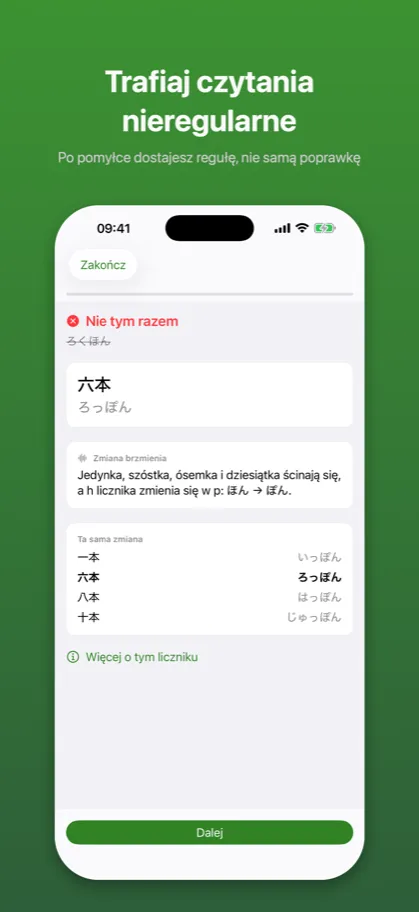
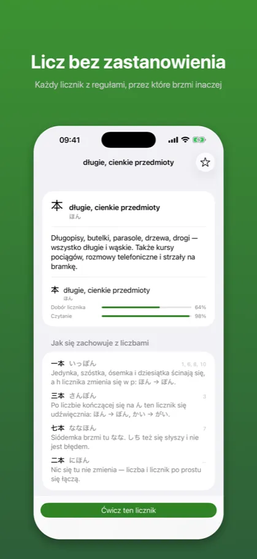
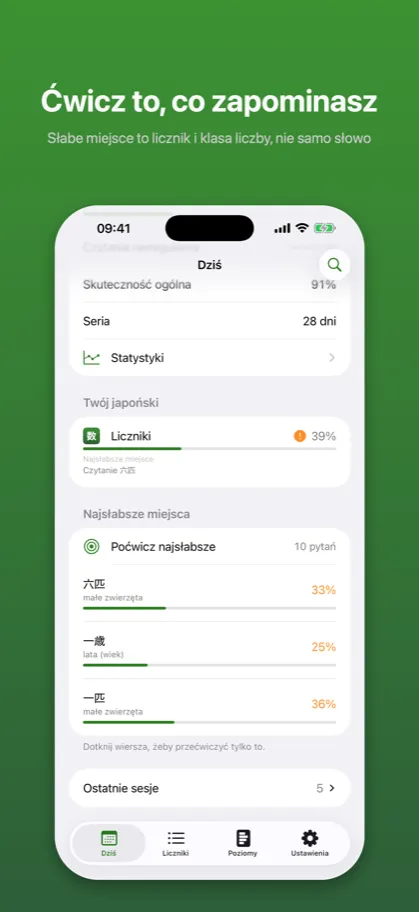

Kazoekata: Liczniki japońskie数え方
Liczenie, kanji, ćwiczenia
App Store →Aplikacja darmowa, z zakupem w środku
Przestań zgadywać, jak czyta się japońskie liczniki. 三本 to さんぼん, 六本 to ろっぽん – i stoi za tym reguła.
Jak to wygląda
{kind=link}
Plan na dziś układa się z tego, co się sypie
{kind=link}

Każde pytanie przychodzi ze zdaniem, w którym stoi
{kind=link}

Po pomyłce dostajesz regułę, nie samą poprawkę
{kind=link}

Każdy licznik z regułami, przez które brzmi inaczej
{kind=link}

Słabe miejsce to licznik i klasa liczby, nie samo słowo
Opis ze sklepu
Japońskie liczenie to nie liczba doklejona do rzeczy. Trzy książki to 三冊, trzy koty to 三匹, trzy długie cienkie przedmioty to 三本 – a 本 przy trójce nie brzmi nawet tak samo jak przy szóstce.
Kazoekata uczy tej części, która naprawdę zabiera czas: nie listy liczników, tylko tego, jak się zachowują.
TRZY UMIEJĘTNOŚCI, MIERZONE OSOBNO
Wiedzieć, że książki liczy się przez 冊, to jedno. Powiedzieć 八冊 bez zatrzymania się – drugie. Usłyszeć ろっぷん i wiedzieć, że to sześć minut – trzecie.
Większość aplikacji uśrednia to do jednej liczby przy liczniku. Ta trzyma je osobno, bo właśnie tam mieszka zdanie, po którym wiadomo, co robić:
本 Dobór licznika 95 %
Czytanie 61 %
Po tym wiadomo, co otworzyć. Po „本 78 %" nie wiadomo nic.
WZÓR, A NIE FISZKA
一本 いっぽん, 三本 さんぼん, 六本 ろっぽん to nie trzy niezależne fakty. Jedynka, szóstka, ósemka i dziesiątka ścinają liczbę i zmieniają h w p; trójka je udźwięcznia. To jedna reguła o trzech twarzach i po tygodniu przestaje wymagać myślenia.
Przy błędnej odpowiedzi aplikacja mówi, na którą regułę się trafiło – i pokazuje inne miejsca, w których dzieje się to samo.
PIĘĆ SPOSOBÓW ZAPYTANIA
Który licznik pasuje. Jak czyta się zapisaną formę. Wpisz czytanie. Zapisz całe wyrażenie. Powiedz, co znaczy usłyszane czytanie. Każdy mierzy coś, czego nie zmierzy żaden inny.
BŁĘDNE ODPOWIEDZI, KTÓRE UCZĄ
Warianty błędne nie są losowe. To, co silnik daje przy wyłączonych zmianach brzmieniowych – さんほん zamiast 三本, よんじ zamiast 四時, いちにん zamiast 一人. Pomyłka, którą naprawdę się robi, postawiona obok formy, której trzeba się nauczyć.
UCZCIWIE O TYM, CO NIEPEWNE
Część czytań ma naprawdę dwie formy. 三階 to さんがい i さんかい; 三足 mówi się na dwa sposoby, a słowniki nie są zgodne. Z takich komórek nigdy nie powstaje pytanie z czterema przyciskami, bo przycisk z poprawną japońszczyzną oznaczoną jako zła uczy nieprawdy niezależnie od tego, co się wybierze. Zamiast tego stoją obok siebie obie formy, razem z powodem.
PIĘĆ POZIOMÓW, NIE JLPT
Liczniki nie dzielą się na poziomy egzaminu. 本 stoi w każdym podręczniku dla początkujących, a 六本 myli ludzi po dwóch latach. Poziomy idą za tym, jak trudność naprawdę narasta: liczby i ludzie, rzeczy codzienne, czas i kalendarz, czytania nieregularne, wszystko naraz.
Poziomy czwarty i piąty nie wnoszą nowych liczników. Czwarty zbiera formy, których nie da się wyliczyć z reguły – ひとり, ついたち, よじ, はたち – i ćwiczy je razem.
POWTÓRKI I SŁABE MIEJSCA
To, że książki liczy się przez 冊, jest faktem do zapamiętania, a fakty blakną, jeśli nie wracają w terminach. To, że ほん po szóstce brzmi ぽん, jest umiejętnością, a umiejętności potrzebują powtórzeń tam, gdzie się sypią. Kazoekata robi jedno i drugie.
Słabym miejscem nie jest „本". Jest nim „本 przy liczbach, które się ścinają" – bo kto pomylił 六本, pomyli też 八本, a sesja wie o tym wcześniej niż on.
POLSKI I ANGIELSKI
Interfejs i treść przełączają się niezależnie. Polskie menu przy angielskich opisach to zamierzona kombinacja.
PRYWATNA Z KONSTRUKCJI
Bez konta, bez analityki, bez reklam, bez sieci. Wydana aplikacja nie wykonuje żadnego zapytania poza tym do App Store przy samym zakupie. Wszystko zostaje na telefonie.
DARMOWE I PREMIUM
Poziomy 1 i 2 są darmowe w całości – dwadzieścia dwa liczniki, szybkie ćwiczenie, powtórki i postęp. To wystarczy, żeby policzyć to, co leży w mieszkaniu. Jeden zakup otwiera poziomy 3–5, komplet trzydziestu ośmiu liczników, trening czytań nieregularnych i ćwiczenie najsłabszych miejsc. Bez subskrypcji.
Tego samego autora: Kaname – gramatyka japońska, Katsuyokei – japońska odmiana, Joshi – japońskie partykuły.
Powyższy opis jest tym samym tekstem, który stoi na karcie aplikacji w App Store – pochodzi z tego samego pliku.
App Store →Aplikacja darmowa, z zakupem w środku
Częste pytania
Czego uczy Kazoekata?
Japońskie liczenie to nie liczba doklejona do rzeczy. Trzy książki to 三冊, trzy koty to 三匹, trzy długie cienkie przedmioty to 三本 – a 本 przy trójce nie brzmi nawet tak samo jak przy szóstce.
Kazoekata uczy tej części, która naprawdę zabiera czas: nie listy liczników, tylko tego, jak się zachowują.
Ile kosztuje Kazoekata?
Poziomy 1 i 2 są darmowe w całości – dwadzieścia dwa liczniki, szybkie ćwiczenie, powtórki i postęp. To wystarczy, żeby policzyć to, co leży w mieszkaniu. Jeden zakup otwiera poziomy 3–5, komplet trzydziestu ośmiu liczników, trening czytań nieregularnych i ćwiczenie najsłabszych miejsc. Bez subskrypcji.
Tego samego autora: Kaname – gramatyka japońska, Katsuyokei – japońska odmiana, Joshi – japońskie partykuły.
Czy działa bez internetu i bez konta?
Bez konta, bez analityki, bez reklam, bez sieci. Wydana aplikacja nie wykonuje żadnego zapytania poza tym do App Store przy samym zakupie. Wszystko zostaje na telefonie.
W jakich językach działa?
Interfejs i treść przełączają się niezależnie. Polskie menu przy angielskich opisach to zamierzona kombinacja.
Dokumenty
Pozostałe aplikacje
- Kaname: Gramatyka japońska — Powtórki JLPT: N5 N4 N3 N2 N1
- Bunmyaku: Japoński w zdaniu — Słówka, kanji i furigana
- Katsuyokei: Odmiana japońska — Czasowniki, formy, fiszki
- Joshi: Partykuły japońskie — Gramatyka i ćwiczenia JLPT
- Kuzushi: Mowa potoczna — Anime, dorama i skróty
- Shindan: Poziom japońskiego — Test JLPT: N5 N4 N3 N2 N1
- Keigo: Grzeczność japońska — Japoński formalny do pracy
- Kifuku: Akcent japoński — Wymowa, intonacja, słuchanie
- Onomatope: Dźwięki i wyrażenia — Słówka z mangi i anime